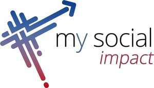

Trade Mark Journal No.2025/018 2 May 2025
WO0000001836189 (9,35,36,45)
Office of origin: Italy
Date of International Registration:19 July 2024
Date of designation in the UK:
19 July 2024

The mark contains the colours Black, blue, red and violet.
International priority date claimed: 24 April 2024
(Italy)
(302024000068872)
- Class 9
- Banking software; financial software for social purposes; financial management software; computer communications software to allow customers to access bank account information and transact bank business; computer terminals for banking purposes; encoded bank cards; multifunction cards for financial services; computer programs relating to financial matters; computer software for producing financial models; computer software relating to the handling of financial transactions.
- Class 35
- Corporate management assistance; business assistance; business advice relating to financial re-organization; business consultancy on financing; financial records management; financial statement preparation and analysis for businesses; financial marketing; business intermediation services for matching potential investors and entrepreneurs looking for funders; advertising services relating to financial services; advertising services relating to financial investment; promotion of financial and insurance services, on behalf of third parties; presentation of financial products on communication media, for retail purposes; advertising services to promote public awareness of social issues; development of corporate strategies regarding corporate social responsibility; compilation of legal information.
- Class 36
- Financial services; financial services for social purposes; banking services; banking services for social purposes; financial loan services; financial assistance; credit services; providing investment savings plans; brokerage of savings contracts; bank account and savings account services; savings scheme services; savings schemes relating to health care; real estate services.
- Class 45
- Legal services; legal consultation services; legal information services; legal assistance services; legal watching services; legal investigation services; bailiff services (legal services); services relating to property transfers [legal services]; legal advice; providing expert legal opinions; legal research; litigation services; legal compliance auditing; legal due diligence services; legal document preparation services; expert witness services; preparation of legal reports.
MAKE YOUR CREDIT S.P.A.
Representative: Jacobacci & Partners S.p.A., Piazza della Vittoria 11, I-25122 Brescia (BS), ITALY